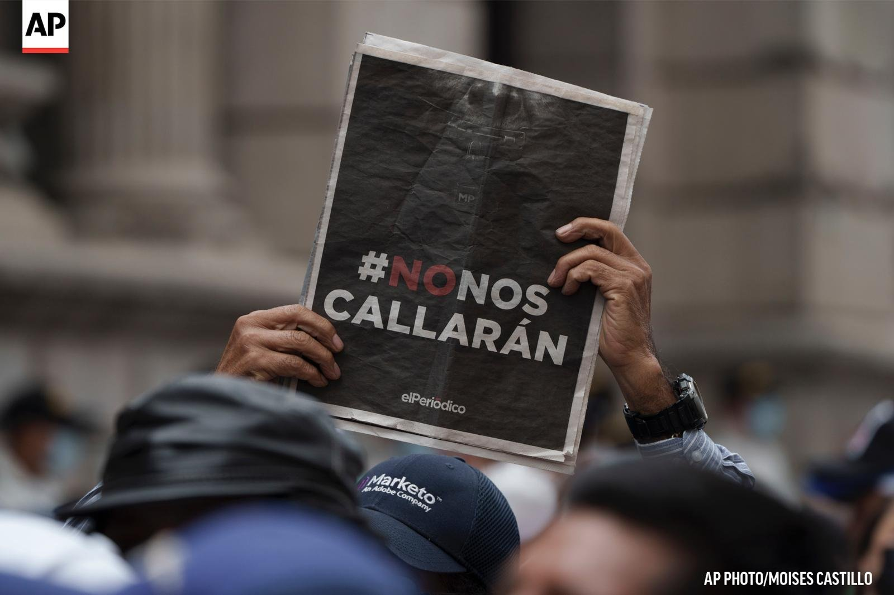

Trajectory
José Rubén Zamora Marroquín holds a degree in industrial engineering from the University of San Carlos of Guatemala and an MBA from INCAE. He worked in the private sector before devoting his life to journalism. He founded Siglo Veintiuno in 1990, elPeriódico in 1996 and Nuestro Diario in 1998.
For more than three decades, his newsrooms investigated presidents, ministers, legislators, judges, military officers, contractors and criminal networks across seven administrations. Many of those lines of inquiry were later pursued by the Public Prosecutor's Office and the UN-backed International Commission against Impunity in Guatemala (CICIG).
This timeline brings together some of the key investigations and what happened next. Journalism convicts no one; its contribution is to document, to ask questions and to leave a public record that makes accountability possible.
Key investigations and their impact
Siglo Veintiuno (1990–1996)
-
May 25, 1993
“Siglo Catorce” against the Serranazo
President Jorge Serrano Elías dissolved Congress and the Supreme Court and imposed prior censorship. Siglo Veintiuno refused to publish censored and circulated under the name Siglo Catorce (“Fourteenth Century”), a reference to the Dark Ages, with the banned texts blacked out.
What happened next: civic resistance defeated the self-coup and Serrano left office on June 1, 1993. That same year, demands to purge Congress and the Supreme Court led to constitutional reforms ratified in the referendum of January 30, 1994.
Sources: Prensa Libre · Prensa Libre, “los depurables” · elPeriódico archive, May 26, 2013.
elPeriódico: the early years (1996–2004)
-
November 7, 1996
“Callejas, el verdadero capo” (Callejas, the real kingpin)
In its first week in circulation, elPeriódico described what it called the largest smuggling network in the country's history, attributed to Alfredo Moreno Molina, and the role of former customs director general Manuel Antonio Callejas y Callejas, a retired general.
What happened next: for two decades the newspaper traced the continuity of the structures that controlled customs, under different names, up to the La Línea case in 2015.
Source: elPeriódico archive, November 7, 1996, pp. 1 and 3.
-
February 2001
Public works contracts for shell companies
elPeriódico revealed that more than Q2.298 billion in public works contracts had been awarded to companies with non-existent addresses or created months earlier, under the administration of Alfonso Portillo.
What happened next: on February 20, 2001, a group of more than 50 people linked to the Ministry of Communications tried to force the newspaper's doors and burned copies of the paper.
Source: elPeriódico archive, February 21, 2001, pp. 1–2.
-
March 6, 2002
The presidential circle's accounts
elPeriódico reported on the prosecutors' investigation into the diversion of Interior Ministry funds and on dollar accounts opened abroad through front men for President Portillo and senior officials.
What happened next: Portillo was extradited to the United States in 2013, pleaded guilty to laundering US$2.5 million in bribes, and was sentenced in 2014 to 70 months in prison.
Sources: elPeriódico archive, March 6, 2002, pp. 1–3 · U.S. Department of Justice
-
November 12, 2002
“La mafia y el ejército” (The mafia and the army)
A special report, signed by José Rubén Zamora, on the parallel structure that since the 1970s had linked senior military commanders to organized crime, smuggling and drug trafficking.
What happened next: on June 24, 2003, a day after he published his column “Ríos Montt: algunos apuntes,” armed men broke into his home and held his family for hours under threat. The Inter-American Commission on Human Rights granted him precautionary measures.
Sources: elPeriódico archive, November 12, 2002, pp. 1–4, and June 25, 2003 · LatAm Journalism Review
Organized crime and the La Línea case (2008–2015)
-
June 2, 2008
“El lado oscuro y los Ángeles de Charlie” (The dark side and Charlie's Angels)
A column by José Rubén Zamora on a parallel power structure linked to organized crime and led by figures within the security and intelligence apparatus of the government of the day.
What happened next: on August 20, 2008, he was abducted, beaten, drugged and abandoned in El Tejar, Chimaltenango; when he reached the hospital he was believed to be dead. Two people were convicted in 2009; the masterminds were never identified.
Sources: elPeriódico archive, June 2 and August 22, 2008 · CPJ · Voice of America
-
November 11, 2013
Juan Carlos Monzón, the vice president's secretary
elPeriódico published its first investigation into Juan Carlos Monzón, private secretary to Vice President Roxana Baldetti. In those years, the Otto Pérez Molina administration retaliated with an advertising boycott: according to the accounts the newspaper published, its net revenue fell 50% between 2012 and 2014 and 102 people were laid off.
What happened next: in April 2015, the Public Prosecutor's Office and CICIG named Monzón as the ringleader of La Línea. He turned himself in on October 5, 2015, and testified as a cooperating witness.
Sources: elPeriódico archive, November 11, 2013, and July 31, 2015 · Prensa Libre
-
February 19, 2015
“AMSA adjudica por excepción dos contratos por Q137.8 millones”
The investigation into a no-bid contract to clean Lake Amatitlán with a chemical product, which the public nicknamed “magic water.”
What happened next: the case became one of the scandals that fueled the 2015 mobilizations. Roxana Baldetti was convicted in this case on October 9, 2018, and sentenced to 15 years and 6 months in prison.
Sources: elPeriódico archive, February 19, 2015, pp. 1 and 5 · Prensa Libre
-
April 17, 2015
“Robo millonario en las aduanas del país” (Multimillion theft in the country's customs)
Coverage of the La Línea customs-fraud network, uncovered by the Public Prosecutor's Office and CICIG, connected the case to the structures the newspaper had been investigating since 1996.
What happened next: Vice President Baldetti resigned on May 8, 2015. President Pérez Molina lost his immunity and resigned on September 3, 2015. Both were sentenced on December 7, 2022, to 16 years in prison.
Sources: elPeriódico archive, April 17, May 9 and September 3, 2015 · Plaza Pública
The Morales and Giammattei administrations (2018–2023)
-
December 24, 2018
“Los constructores favoritos” (The favorite contractors)
The ten companies that benefited most in 2018 from José Luis Benito's Ministry of Communications had been awarded contracts worth more than Q2.265 billion.
What happened next: in 2020, prosecutors found Q122 million in suitcases in a house in Antigua Guatemala linked to the former minister. Benito went into hiding, turned himself in in 2022 and was convicted in 2024 and in 2025, the latter over the Chimaltenango bypass, with commutable sentences.
Sources: elPeriódico archive, December 24, 2018, p. 4, and October 21, 2020 · Prensa Libre
-
July 4, 2019
“Gobierno utiliza convenios para compra millonaria de naves”
In a single day, the Jimmy Morales administration committed Q210 million to Argentina for two Pampa III aircraft, through an agreement that bypassed the Procurement Law, and paid Q90 million for a ship from Colombia.
What happened next: the Comptroller General advised against the purchase and the Constitutional Court ordered the government to refrain from it; the aircraft were never bought.
Sources: elPeriódico archive, July 4, 2019, p. 5 · Prensa Libre
-
May 3, 2021
“Empresa intermediaria negoció vacuna rusa con Guatemala” (Intermediary company negotiated Russian vaccine with Guatemala)
The investigation into the Health Ministry's contract with Human Vaccine LLC to buy 16 million doses of Sputnik V, with clauses that released the intermediary from liability for delays. In July, the newspaper reported that Q614.5 million had been paid in advance and only three shipments had arrived.
What happened next: on December 1, 2023, the U.S. Treasury Department sanctioned Luis Miguel Martínez, head of Giammattei's Government Center, for soliciting bribes in the purchase of the Sputnik V vaccine.
Sources: elPeriódico archive, May 3, 2021, pp. 1, 4 and 5, and July 3, 2021 · U.S. Department of the Treasury
-
August 25, 2021
“Los 7 días que nos visitaron los rusos” (The seven days the Russians visited us)
A detailed account, based on testimonies, of the visit of Russian businesspeople seeking a mining terminal at the port of Santo Tomás de Castilla, and of the alleged delivery of cash to President Giammattei rolled up in a carpet.
What happened next: a month earlier, on July 23, 2021, the head of the Special Prosecutor's Office against Impunity, Juan Francisco Sandoval, had been dismissed. On January 17, 2024, the State Department designated Giammattei for significant corruption, citing credible information that he accepted bribes while in office.
Sources: elPeriódico archive, August 25, 2021, pp. 1–3 · U.S. Department of State
-
July 29, 2022
The arrest
After 144 weeks of investigations into the Giammattei administration, José Rubén Zamora was arrested at his home and the newspaper's offices were raided. With him in prison, elPeriódico published “144 semanas de gobierno, 144 denuncias de corrupción” (144 weeks of government, 144 corruption reports) on September 11, 2022.
What happened next: elPeriódico published its final edition on May 15, 2023, after more than 200 investigations into that administration. Zamora spent 1,295 days in prison and remains under house arrest. See the case timeline.
Source: elPeriódico archive, July 30 and September 11, 2022, and May 15, 2023.
The archive survives
-
2025–2026
27 years of journalism, open to the public
elPeriódico's complete print collection is preserved and searchable at el Archivo, part of the Central America Independent Media Archive (CAIMA), an initiative of Bard College and PEN America that preserves endangered independent journalism in Central America.
Sources: Bard College · LatAm Journalism Review

Awards and recognition
- Maria Moors Cabot Prize Columbia University, New York, 1995.
- International Press Freedom Award Committee to Protect Journalists (CPJ), 1995.
- One of the 50 World Press Freedom Heroes of the 20th Century International Press Institute (IPI), 2000.
- ICFJ Knight International Journalism Award International Center for Journalists, Washington, 2003.
- King of Spain International Journalism Award To elPeriódico as Outstanding Media Outlet in Ibero-America. Madrid, 2021.
- RSF Press Freedom Prize for Independence Reporters Without Borders, Brussels, 2023.
- Gabo Award for Excellence Fundación Gabo, 2024.
- 16th Antoni Traveria Prize for Freedom of Expression in Ibero-America Casa Amèrica Catalunya, Barcelona, 2025.
- Albie Award Clooney Foundation for Justice, London, 2025.
- Hermann Kesten Prize PEN Germany, 2026. To be presented on November 24 in Darmstadt.
Since 2022, several of these awards have been accepted on his behalf by his family, because he was in prison or barred from leaving the country.